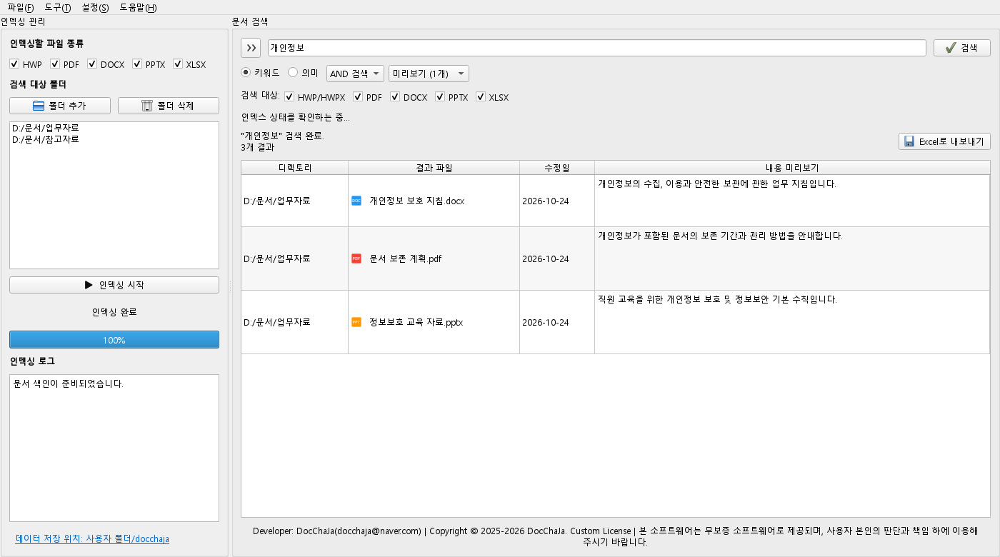

파일을 하나씩 열지 않아도
문서 본문을 미리 색인해, 원하는 단어가 들어 있는 자료를 찾습니다.
WINDOWS를 위한 문서 검색 · 2.0 BETA
파일 이름은 잊어도 괜찮아요.
기억나는 단어와 문장으로,
내 PC 속 필요한 문서를 찾아드립니다.
2.0 베타 · Windows 10/11 x64 · Python 별도 설치 불필요

매일 쌓이는 문서를 위한 작은 도우미
공문서, 회의록, 보고서, 수업 자료까지.
검색할 폴더를 등록하고 문서 속 내용을 찾아보세요.

문서 본문을 미리 색인해, 원하는 단어가 들어 있는 자료를 찾습니다.
등록한 문서의 추출과 검색, 의미 검색 계산을 내 PC에서 처리합니다.
본문 미리보기, 원본 열기, 유사 문서 찾기와 Excel 내보내기를 지원합니다.
기억나는 방식대로
정확한 용어는 키워드로,
떠오르는 설명은 의미 검색으로.
의미 검색은 선택형 모델을 별도로 가져와야 합니다.
2.0 베타에서는 CPU를 사용합니다.
‘개인정보’와 ‘보관’이 함께 들어 있는 문서를 찾습니다.
AND / OR 옵션과 파일 형식 필터로 검색 범위를 조절하세요.
검색 방법 자세히 보기 →처음 한 번만 준비하면
설치 파일을 실행하고 시작 메뉴에서 닥차자를 여세요.
왼쪽의 ‘폴더 추가’로 검색할 곳을 고르고 ‘인덱싱 시작’을 누르세요.
키워드 색인이 준비되면 검색어를 입력하세요. 결과를 더블클릭하면 원본이 열립니다.
검색에 필요한 실행 환경이 함께 설치됩니다. Python, 한/글, MS Office 없이 문서 내용을 검색할 수 있습니다. 검색 결과의 원본 파일을 열 때는 해당 형식을 열 수 있는 프로그램이 필요합니다.
네. 키워드 검색은 모델 없이 사용할 수 있습니다. 의미 검색을 원하면 EmbeddingGemma ONNX 파일 6개를 따로 받아 ‘설정 → AI 모델 관리’에서 가져오세요. 이 버전에는 자동 다운로드 기능이 없습니다. 모델 가져오기 안내
텍스트가 없는 이미지 전용 PDF의 OCR은 제공하지 않습니다. 암호·DRM으로 보호되거나 손상된 문서는 건너뛸 수 있습니다. 구형 DOC·PPT·XLS 대신 DOCX·PPTX·XLSX 형식을 지원합니다.
네. 2.0 베타는 CPU 전용입니다. GPU 가속과 새 UI는 3.0 개발 범위이며 이번 다운로드에 포함되지 않습니다.
제거 프로그램은 원본 문서를 지우지 않습니다. 설정·색인·가져온 모델도 남겨 두므로 다시 설치할 때 활용할 수 있습니다. 기본 데이터 위치는 사용자 폴더 아래의 docchaja입니다.
현재 베타 설치 파일은 코드 서명이 없어 게시자 확인 또는 SmartScreen 안내가 나올 수 있습니다. 공식 다운로드 주소와 릴리즈의 파일 해시를 확인하세요. 회사·학교 PC에서는 조직의 설치 정책을 따르세요.
DOCCHAJA 2.0 BETA
기존 UI와 CPU 검색을 담은 2.0 베타입니다.
Windows 10/11 · x64 · 93.2 MB
변경 내역·파일 해시 확인 ↗2026.10.24 공개 · AI 모델 별도 · 사용 조건은 설치 시 확인